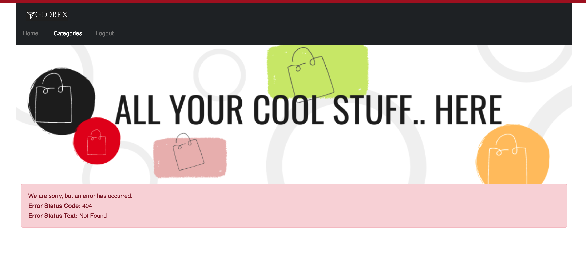
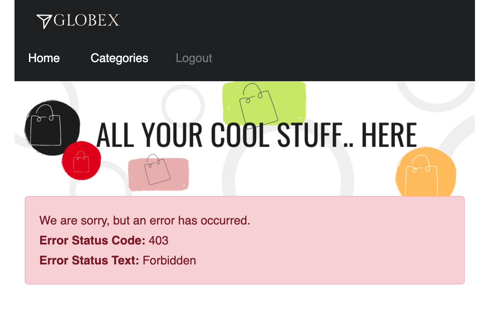
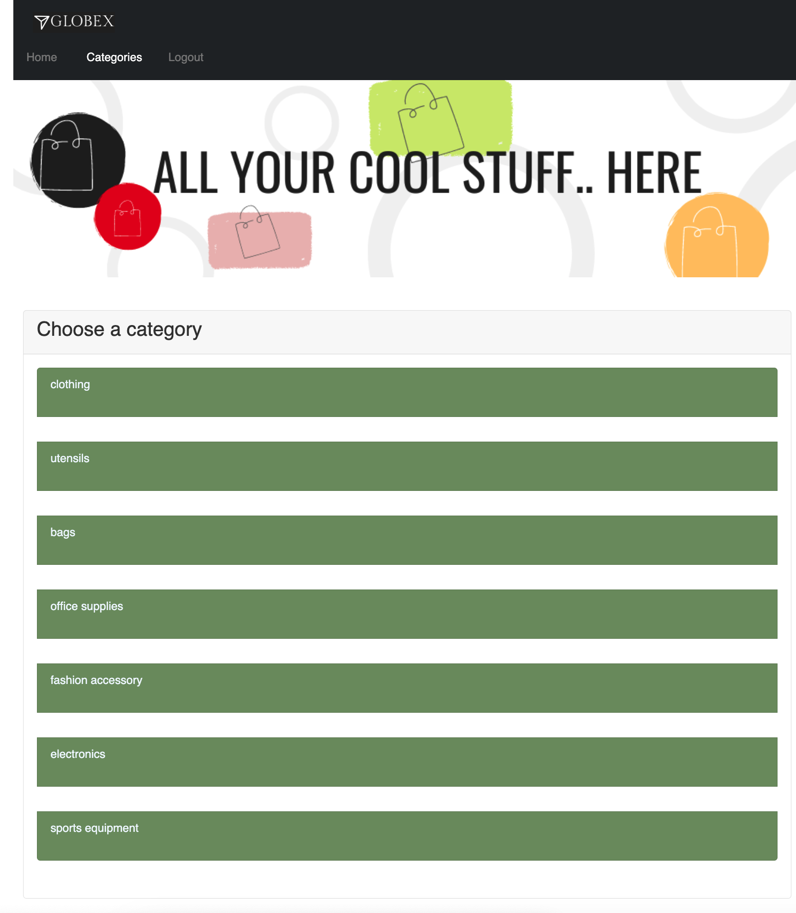
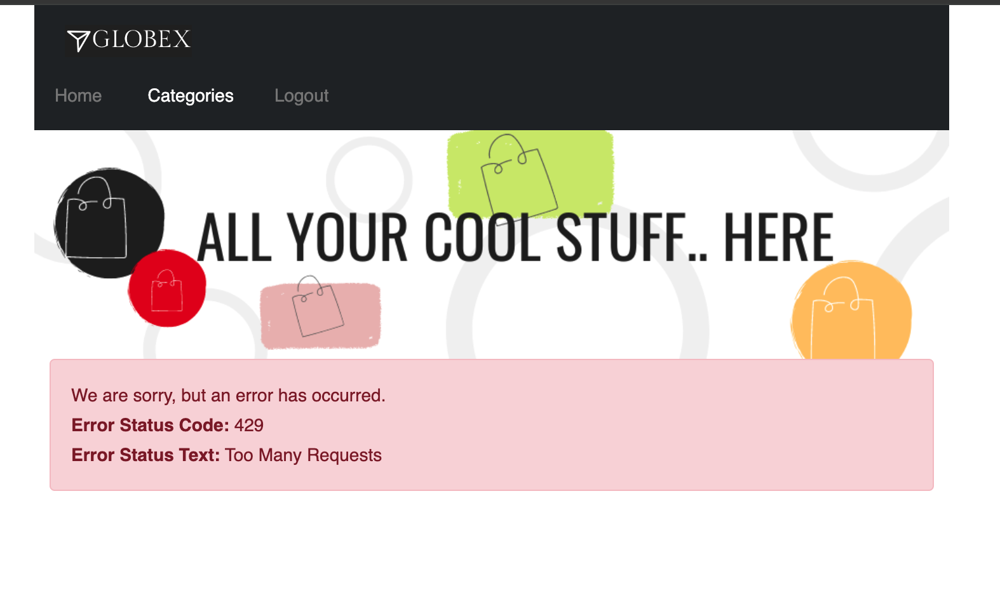

Solution Patterns: Connect, Secure and Protect with Red Hat Connectivity Link
See the Solution in Action
1. Solution Setup - Onboard ProductCatalog service endpoint
Now that the Platform Engineer has made the Gateway available, Developers/App owners can now onboard their application/service endpoints to be available for secure access. Application developers can self service and refine policies to their specific needs in order to protect their exposed service endpoints.
In this solution pattern, the Globex developers are now ready to onboard the ProductCatalog service to be securely exposed as an endpoint.
1.1. Run the deployment scripts
-
Run the Ansible script which will setup the
ProductCategory Service EndpointandGlobex Mobile app. This also setups Red Hat build of Keycloak for SSO.cd ../demo-setup ansible-playbook playbooks/globex.yml \ -e ACTION=create -e "ocp4_workload_cloud_architecture_workshop_mobile_gateway_url=https://globex-mobile.globex.%AWSROOTZONE%" -
Expected output:
PLAY RECAP ***************************************************************************************** localhost : ok=37 changed=10 unreachable=0 failed=0 skipped=7 rescued=0 ignored=0
2. Solution walkthrough as a Developer
2.1. Test Globex Mobile app
-
Access the Globex Mobile’s Route from the globex-apim-user1 namespace > Routes or click here
-
Login using
asilva/openshiftcredentials; Click onCategoriesbutton on the homespage -
You should see a 404. This is because the ProductCatalog service-endpoint hasn’t been exposed using a HTTPRoute

2.2. Set up HTTPRoute for ProductCatalog service-endpoint
-
Copy the following into the Import YAML utility accessible by the (+) button on top of the OpenShift Console
-
In this YAML replace the the
spec > hostnamesas show below
kind: HTTPRoute
apiVersion: gateway.networking.k8s.io/v1beta1
metadata:
name: globex-mobile-gateway
namespace: globex-apim-user1
labels:
deployment: globex-mobile-gateway
service: globex-mobile-gateway
spec:
parentRefs:
- kind: Gateway
namespace: ingress-gateway
name: prod-web
hostnames:
- globex-mobile.globex.%AWSROOTZONE%
rules:
- matches:
- path:
type: PathPrefix
value: "/mobile/services/product/category/"
method: GET
backendRefs:
- name: globex-mobile-gateway
namespace: globex-apim-user1
port: 8080
- matches:
- path:
type: Exact
value: "/mobile/services/category/list"
method: GET
backendRefs:
- name: globex-mobile-gateway
namespace: globex-apim-user1
port: 80802.3. Test Globex Mobile again (after HTTPRoute is setup)
-
Try accessing Categories again - you should see a 403.

-
This is because while you have the HTTPRoute now, the original deny-all default policy kicks in and doesn’t allow any requests to made. We have a zero-trust auth in place!!
2.4. Setup Authpolicy
-
Copy the following into the Import YAML utility accessible by the (+) button on top of the OpenShift Console
apiVersion: kuadrant.io/v1
kind: AuthPolicy
metadata:
name: globex-mobile-gateway
namespace: globex-apim-user1
spec:
targetRef:
group: gateway.networking.k8s.io
kind: HTTPRoute
name: globex-mobile-gateway
rules:
authentication:
"keycloak-users":
jwt:
issuerUrl: https://sso.%OPENSHIFTSUBDOMAIN%/realms/globex-user1
response:
success:
filters:
identity:
json:
properties:
userid:
selector: auth.identity.sub2.5. Test Globex Mobile again (after HTTPRoute and AuthPolicy are setup)
-
Try accessing Categories again - you should now be able to see the Categories.

2.6. Test the default RateLimit Policy
-
Try accessing Categories again - you should now be able to see the Categories.
-
Click any of the Categories from the list, and then the Categories menu, and repeat this a few times.
-
Expect to see a 429 error:

2.7. Create a new RateLimit Policy which overrides default gateway policy
-
Copy the following into the Import YAML utility accessible by the (+) button on top of the OpenShift Console
apiVersion: kuadrant.io/v1
kind: RateLimitPolicy
metadata:
name: globex-mobile-gateway
namespace: globex-apim-user1
spec:
targetRef:
group: gateway.networking.k8s.io
kind: HTTPRoute
name: globex-mobile-gateway
limits:
"per-user":
rates:
- limit: 100
window: 10s
counters:
- expression: auth.identity.userid2.8. Test Globex Mobile again (after HTTPRoute, AuthPolicy and RateLimitPolicy are setup)
-
Try accessing Categories again - you should now be able to see the Categories.
-
Click any of the Categories from the list, and then the Categories menu, and repeat this a few times.
-
You would now see there is no 429 for up to 100 requests in a duration of 10 seconds.